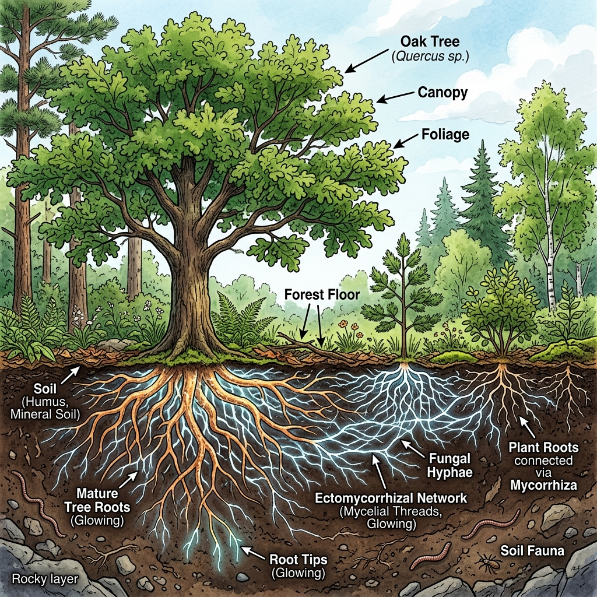
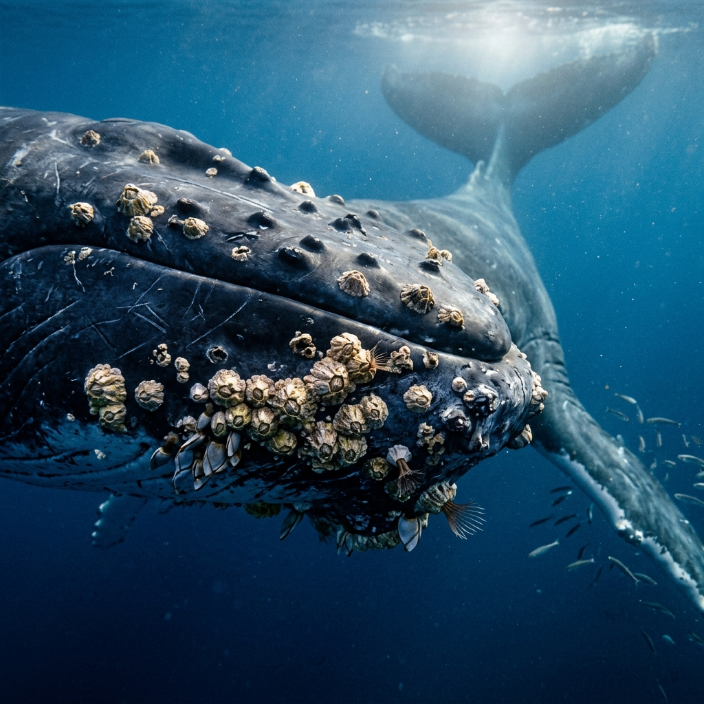
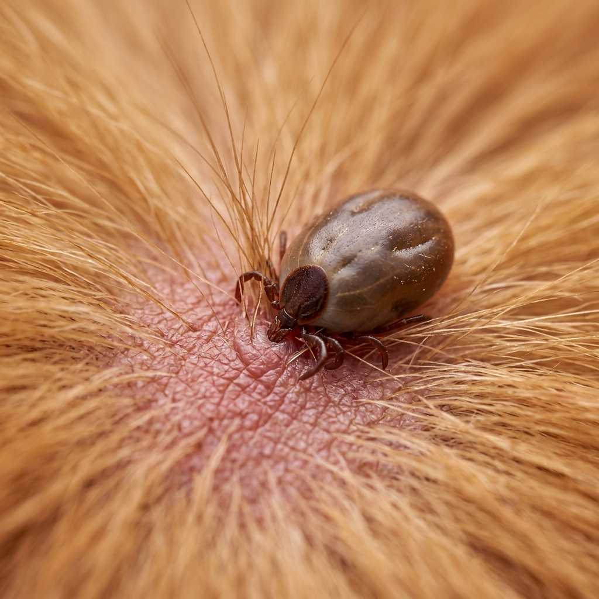

Ekologi: symbios, konkurrens och nischer
Från grekiskans syn (tillsammans) och bios (liv)
Båda parter gynnas av samarbetet.

Exempel: mykorrhiza (träd och svamp) eller lavar (svamp och alg)
En part drar nytta, den andra påverkas varken positivt eller negativt.

Exempel: havstulpaner som får biologisk snålskjuts av valar.
En part gynnas på den andres bekostnad.

Exempel: fästingar suger blod för att utvinna energi från värdorganismen.
När två arter utnyttjar exakt samma begränsade resurs.
En arts specialisering eller roll i ekosystemet.
Resultat: de lever i samma skog, men har delat upp resurserna.
Klicka på korten för att visa definitionen